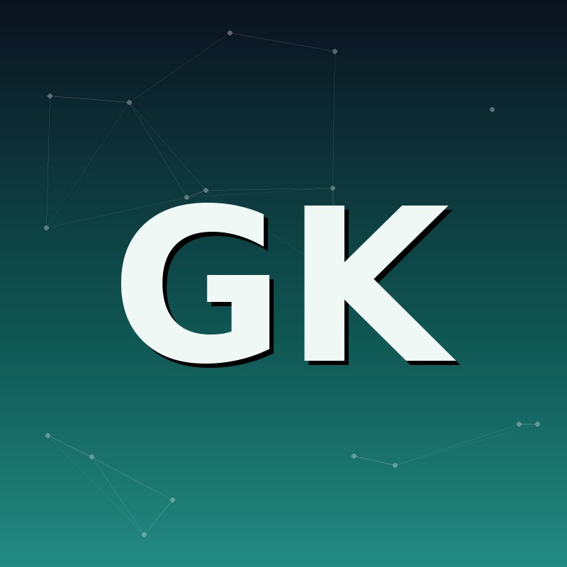

Staff Engineer DevOps
Gustavo Kuno
SRE | Cloud Architect | DevOps
Joinville, Santa Catarina, Brasil
Sobre
Staff Engineer com mais de 8 anos de experiência em ambientes de Cloud e DevOps. Especialista em arquitetar serviços de data center e cloud, com forte foco em automação e projetos de migração. Capacidade comprovada de elevar produtividade, segurança e confiabilidade de produtos por meio de iniciativas estratégicas e colaboração efetiva com times multidisciplinares.
Sempre em busca de evolução, com foco na execução de atividades que envolvem arquitetura e infraestrutura automatizada — seja on-premise ou cloud. Possuo vasto conhecimento em arquitetura de infraestrutura e facilidade para atuar em ambientes de alta complexidade e distribuídos, tendo participado e conduzido projetos de migração envolvendo data center e plataformas como Microsoft, Linux, Dell EMC, Cloudflare e Azure.
Competências & Stack Técnica
Cloud & Infraestrutura
Automação & Provisionamento
Containers & Orquestração
CI/CD & DevOps
Redes, Segurança & Virtualização
Web, Dados & Observabilidade
Experiência Profissional
-
Staff Engineer DevOps
Fev 2024 — atual
- Definição e execução de estratégias de segmento para implementar iniciativas que aumentam produtividade, segurança, confiabilidade e performance do produto.
- Atuação estratégica focada em objetivos de alto impacto, mirando resultados de médio e longo prazo.
- Suporte no planejamento de atividades de alto risco, mitigando problemas potenciais e garantindo maior previsibilidade.
- Documentação e compartilhamento de decisões arquiteturais, além de discussões técnicas entre diferentes times.
-
Site Reliability Engineer
Ago 2023 — Fev 2024
- Criação e acompanhamento de monitoramento e métricas para garantir disponibilidade do produto.
- Desenvolvimento de pipelines de CI/CD para serviços em containers, com .NET no backend e React no frontend.
- Implementação de Load Balancer L7 e governança de acesso para melhorar segurança e eficiência.
- Gestão de releases e rollouts de novos projetos e funcionalidades.
- Resolução de bugs de produção em colaboração com o time de desenvolvimento. Plataforma principal: Azure.
-
DevOps Tech Lead
Jan 2022 — Ago 2023
- Liderança técnica do time de DevOps, definindo padrões e cultura DevOps.
- Documentação e compartilhamento de decisões arquiteturais entre times.
-
Cloud Analyst Sênior
Jun 2021 — Jan 2022
- Administração e provisionamento de recursos Azure com IaC via Terraform.
- Gestão do ambiente e planejamento de melhorias voltadas à confiabilidade operacional.
- Melhoria do pipeline de CI/CD e tratamento de problemas de segurança e performance.
- Dimensionamento de infraestrutura e acompanhamento de incidentes.
- Apoio ao desenvolvimento técnico do time e disseminação da cultura DevOps.
-
Cloud Analyst
Dez 2020 — Jun 2021
- Tratamento de problemas de performance e hardening de segurança em rede e servidores (Windows/Linux).
- Migração de ambiente de desenvolvimento on-premise para a cloud, melhorando a eficiência operacional.
- Automação de processos em cloud para otimizar fluxos de trabalho.
-
Cloud Analyst Jr
Jul 2020 — Dez 2020
- Redução de custos de cloud em ambientes de Dev/Prod.
- Migração de rotinas de FTP para métodos modernos de entrega de artefatos.
- Migração de servidor de e-mail compartilhado para infraestrutura Linux, resolvendo problemas de MTA no envio de e-mails em grande volume.
-
IT Infrastructure Engineer
Jun 2018 — Jul 2020
- Consultoria de TI para soluções Microsoft, Dell Technologies e infraestrutura de segurança.
- Suporte a soluções de storage em diversas plataformas, incluindo HP StoreSimple e Dell Equallogic.
- Gestão de soluções cloud Azure para VMs Linux e Windows.
- Engenheiro de pré-vendas para servidores, storage (block, object e unstructured) e soluções de rede Dell EMC.
- Migração de serviços de e-mail para Exchange Online e gestão de soluções Office 365.
-
Support Analyst Jr
Jul 2016 — Abr 2018
- Gestão de serviços gerenciados para grandes clientes, com suporte a tecnologias Microsoft.
- Manutenção de ambientes de infraestrutura, incluindo Windows Server e Exchange Server.
- Administração de rede e gestão de acessos de usuários.
-
Support Analyst
Jan 2015 — Mar 2016
- Suporte de help desk para questões de rede e acesso de usuários.
- Manutenção de infraestrutura de rede física e hardware de desktops/servidores.
Projetos
Migração Cloudflare — Linx / Microvix
Out 2021 — Nov 2022Associado a Linx
A Microvix, software de gestão de varejo especializado em franquias, migrou com sucesso aproximadamente 100 URLs — incluindo WebApi, WebApps e aplicações legadas — para o Web Application Firewall (WAF) e a Content Delivery Network (CDN) da Cloudflare. Iniciativa estratégica para reforçar a segurança de rede e otimizar a performance.
Licenças & Certificações
Microsoft Certified: Azure Solutions Architect Expert
Microsoft · 2022
Microsoft Certified: DevOps Engineer Expert
Microsoft · 2021
MCSA: Windows Server 2016
Microsoft · 2020
Microsoft Certified: Azure Administrator Associate
Microsoft · 2020
MS-100: Microsoft 365 Identity and Services
Microsoft · 2020
Specialist – Implementation Engineer, SC Series v1.0
Dell Technologies · 2019
Specialist – Technology Architect, Midrange Storage Solutions v1.0
Dell EMC · 2019
Associate – Information Storage and Management v3.0
Dell EMC · 2019
CCNA Exploration 5.0
Cisco Networking Academy · 2017
Formação Acadêmica
Tecnólogo em Redes de Computadores
SENAI/SC — Serviço Nacional de Aprendizagem Industrial
2015 — 2017
Idiomas
Vamos conversar
Aberto a novas oportunidades e conexões em Cloud, SRE e DevOps.